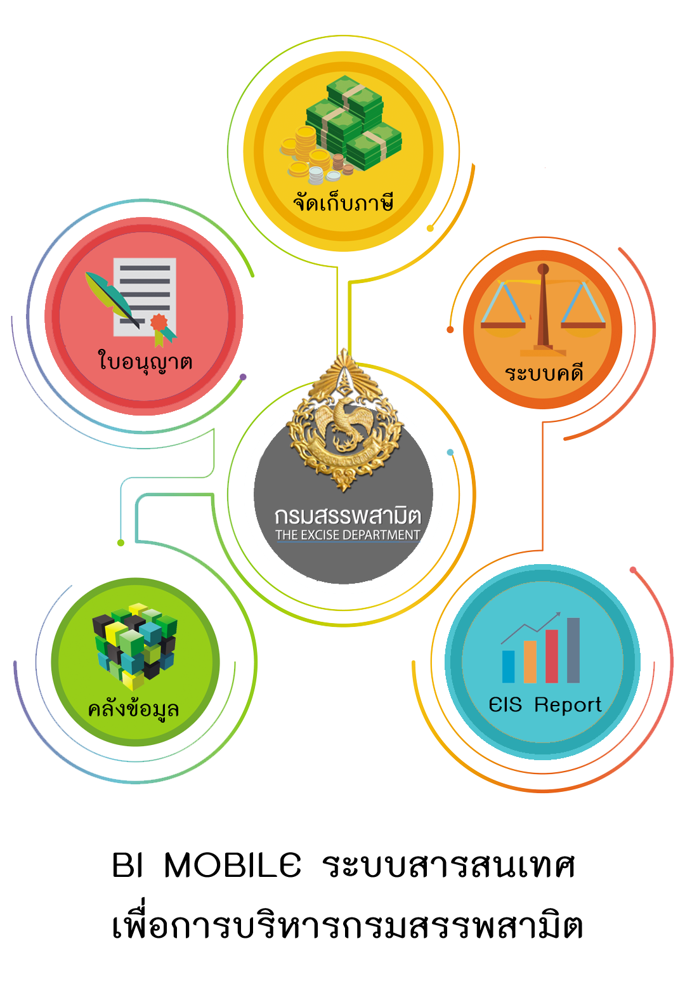

<ion-content class="bg">
  <div style="height: 80%; text-align: center">
    
  </div>
  <div style="text-align: center;">
    <button ion-button round [color]="navbar" (click)="gotoHomePage()">เข้าสู่ระบบ</button>
  </div>
</ion-content>
